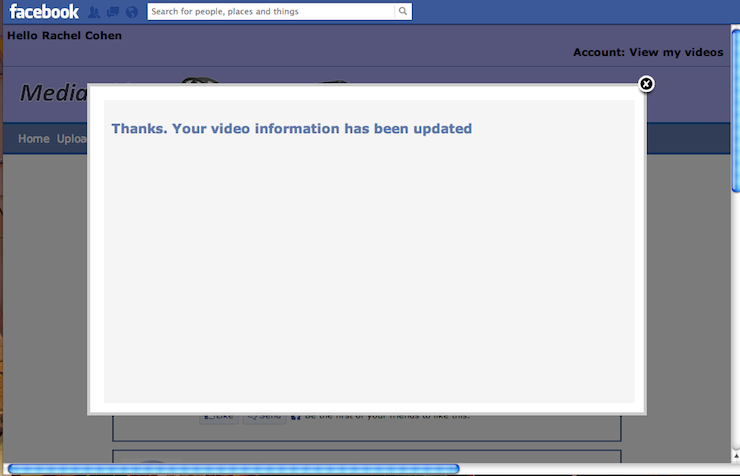
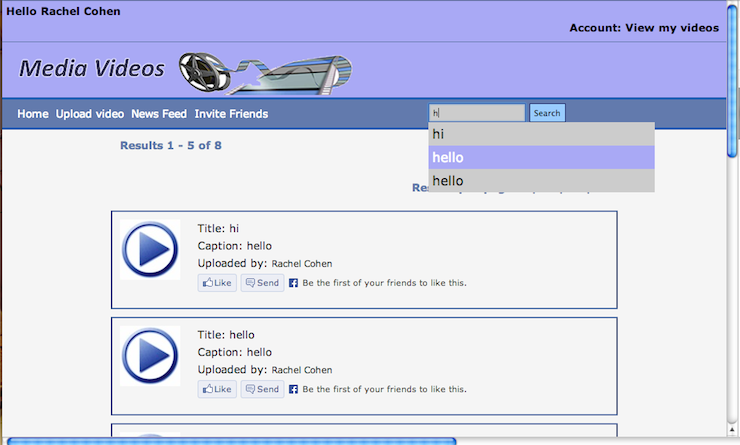

Rachel O'Donnell
Web developer
About
Work
Contact
☰
About
Work
Contact


❮
❯
Media Videos - Facebook Application
This was my final year project which included using an existing social website such as facebook, but extending it's functionality through a facebook application where users and students interested in filming and editing can upload videos and work they have created to the application. The application can then by used by companies such as the BBC to find potential employees. The application will show videos that have been uploaded and students can use the search facilities on the application. Programming Languages used include PHP, MySQL, HTML, CSS, Facebook API, Social plugins, Facebook Graph API and the Facebook PHP SDK. Version 2 is an update of the application done after finishing university.